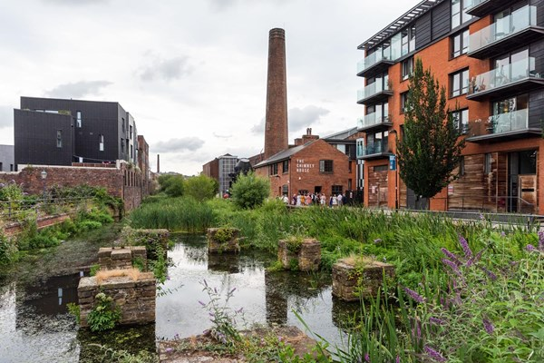

Welcome
This site presents a comprehensive development proposal for the land behind Acorn Street, Kelham Island. As a vibrant and evolving area of Sheffield, this location presents immense potential for a mixed-use urban regeneration project, blending sustainable design with community-focused planning.
The proposal is grounded in best practices from the RICS and CIOB professional standards, ensuring full alignment with commercial viability, compliance, and buildability.
